Norbert Grund (1717–1767): Půvab všedního dne
Datum konání : 1.12.2017 - 18.3.2018
Místo konání: Palác Kinských
Výstava Norbert Grund (1717–1787). Půvab všedního dne představuje poprvé v širších souvislostech Grundovu žánrovou malbu, tedy výjevy z běžného života. V jednotlivých oddílech ukazuje pestrost námětů a přináší možnost porovnat Grundovy práce se soudobou středoevropskou kabinetní malbou i obrazy, z nichž mohl malíř čerpat inspiraci. Samostatná kapitola je věnována grafickým listům Jana Jiřího Balzera (1734–1799), které dokládají oblibu Grundových děl. Expozici navíc doplňují ukázky uměleckého řemesla, ilustrující kulturu doby rokoka.
Umělecky se Norbert Grund vyškolil u svého otce Christiana Grunda, dvorního malíře a správce obrazárny Libštejnských z Kolowrat. Po vyučení se odebral na cesty a mnohé podněty načerpal také ve šlechtických obrazárnách či z grafických listů. Do Prahy se Grund vrátil nejpozději roku 1751, kdy se oženil. Až do své smrti roku 1767 pak působil na Malé Straně jako člen tamního malířského cechu. Grund nejspíše pracoval pro volný trh a na bezprostřední objednávku asi jen ojediněle. Jeho díla byla oblíbená mezi vzdělanými příslušníky středního stavu a umělci, nacházela se ale také v klášterních a aristokratických sbírkách.
Poslední monografické výstavy Norberta Grunda se konaly roku 1967 ve vídeňském Belvederu a pražské Loretě (a v menším rozsahu ještě roku 1972 v Liberci). Od té doby se poznatky o Grundově uměleckém díle značně rozšířily a obohatily tak přípravu aktuální výstavy v paláci Kinských i velké monografie o Norbertu Grundovi, která vyjde v roce 2018.
Kurátorka: Marcela Vondráčková
Web výstavy: ngprague.cz
Recenze:
Jan Šída, Právo
Peter Kováč, Stavitelé katedrál
Soňa Šálková, Artmagazín
| Klient |
Národní galerie Praha |
| Lokace |
Praha 1 – Staré Město, Česká republika |
| Typologie |
výstava
|
| Typ |
dočasná instalace |
| Rok |
2018 |
| Status |
realizováno |
| Náklady |
1 300 000 Kč |
| Autoři |
MgA. Filip Kosek, MgA. Jan Říčný |
| Spolupráce |
kurátor: Mgr. Marcela Vondráčková PhD.
výroba a instalace: Vetamber s.r.o.
houpačka: Mojmír Veselka
osvětlení: Václav Kubela, RCNKSK
zvuková instalace: Julie Lupačová
|
 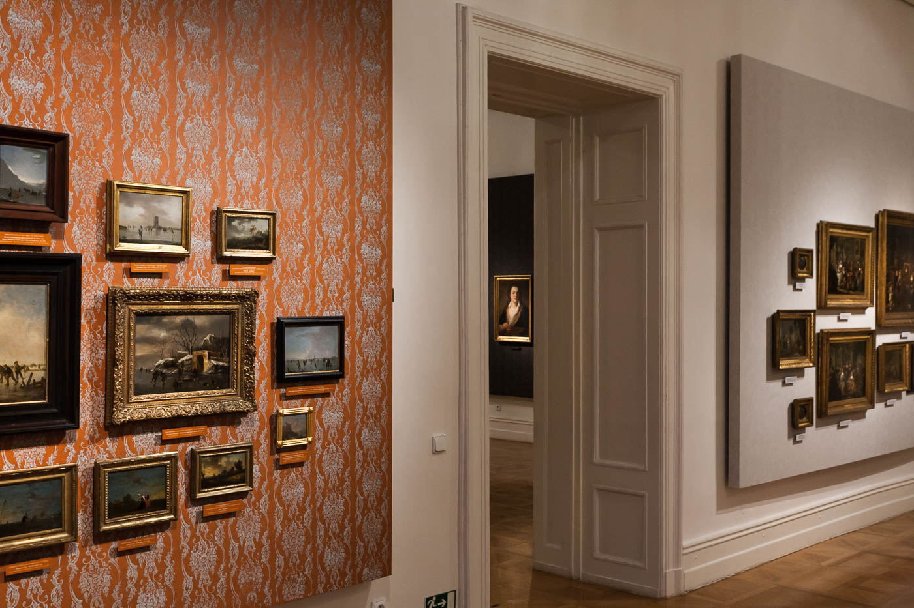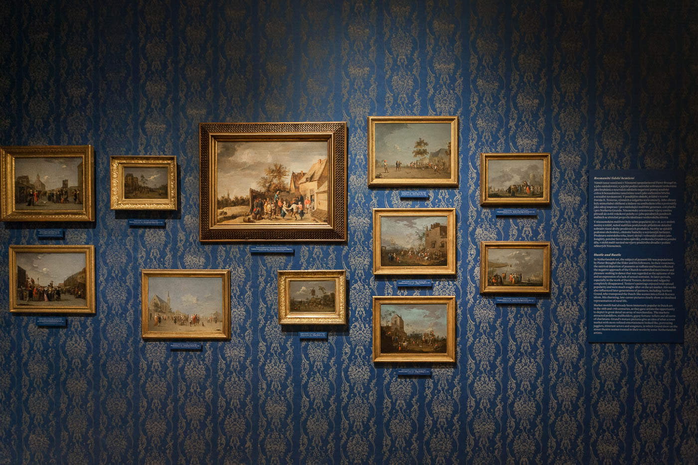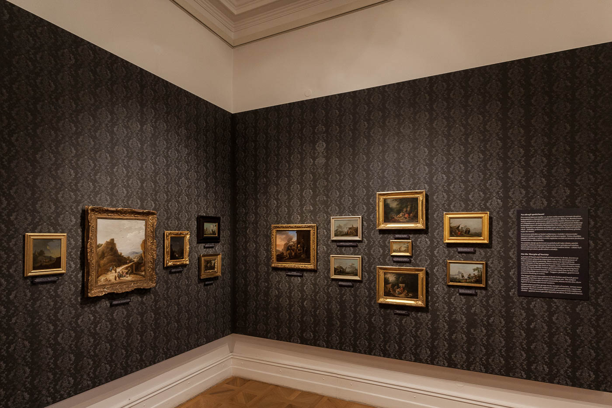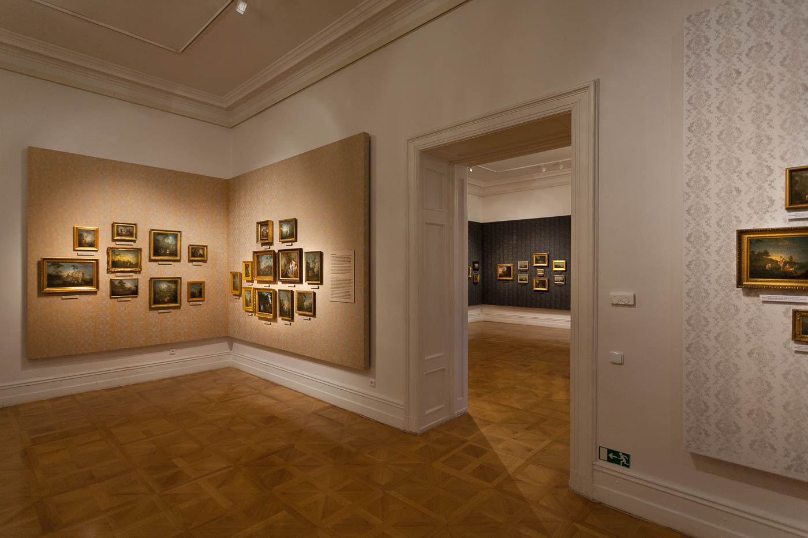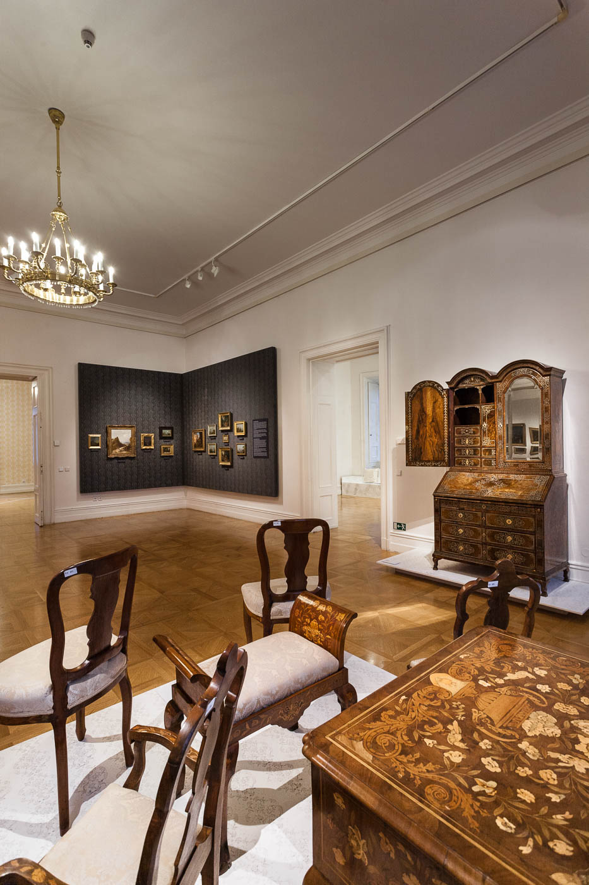
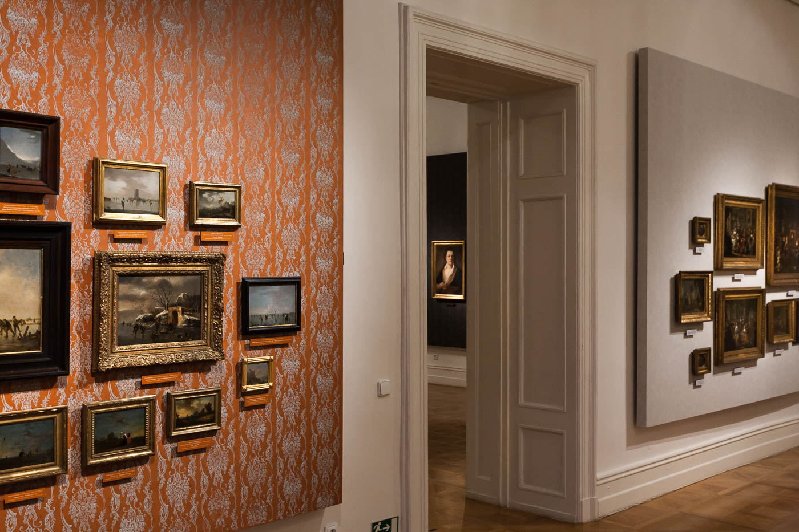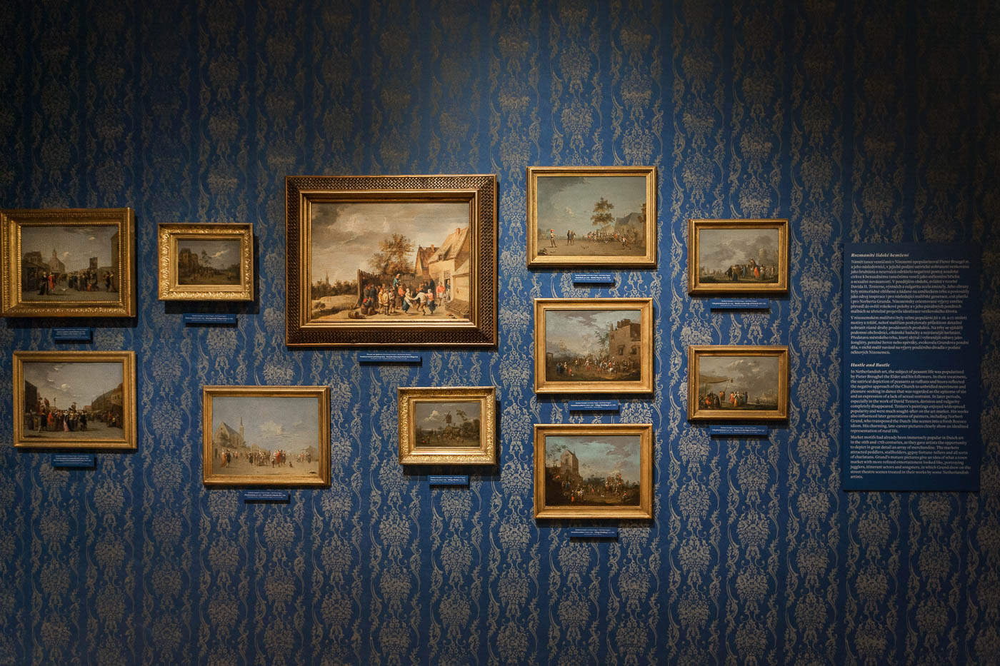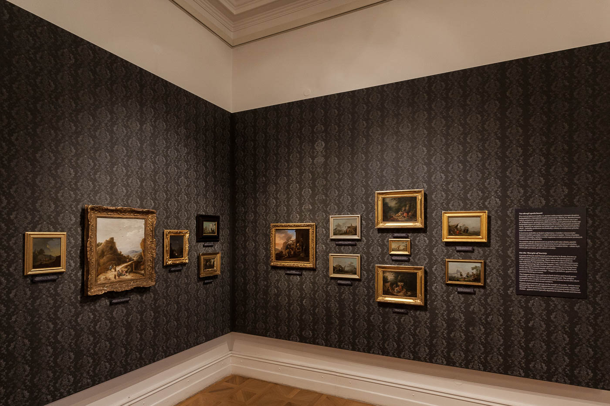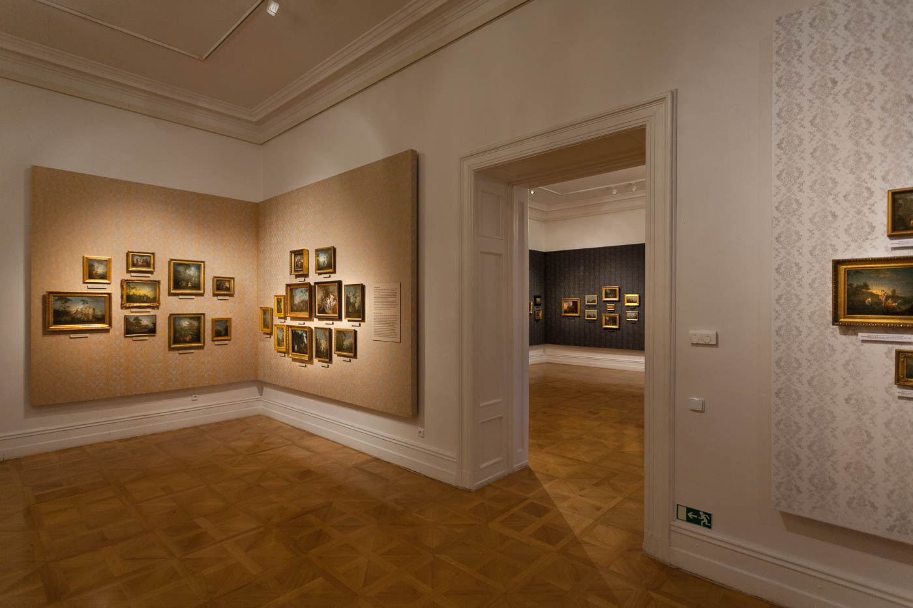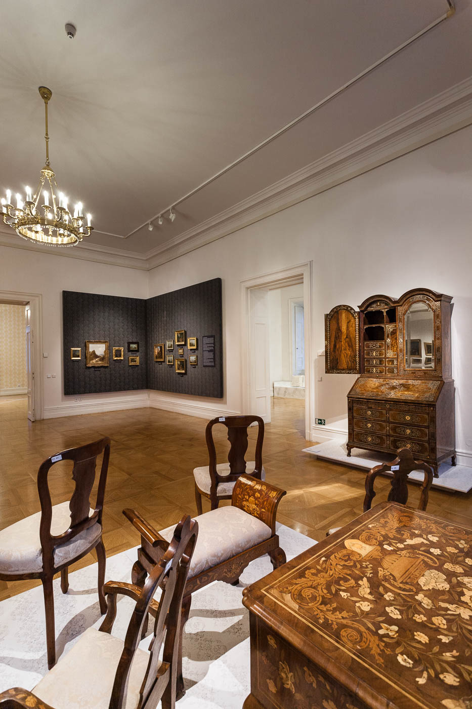

 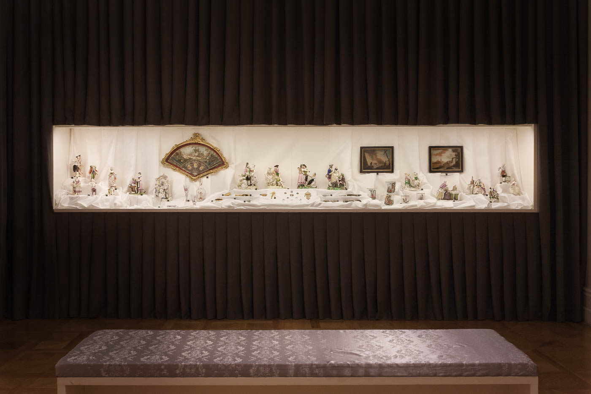
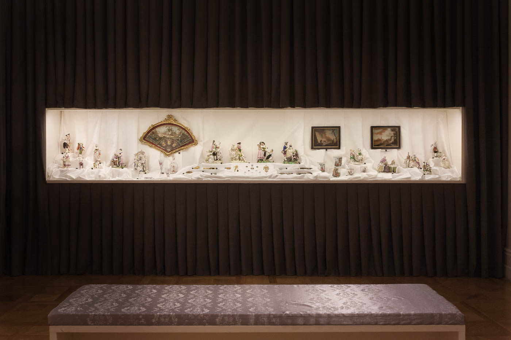
 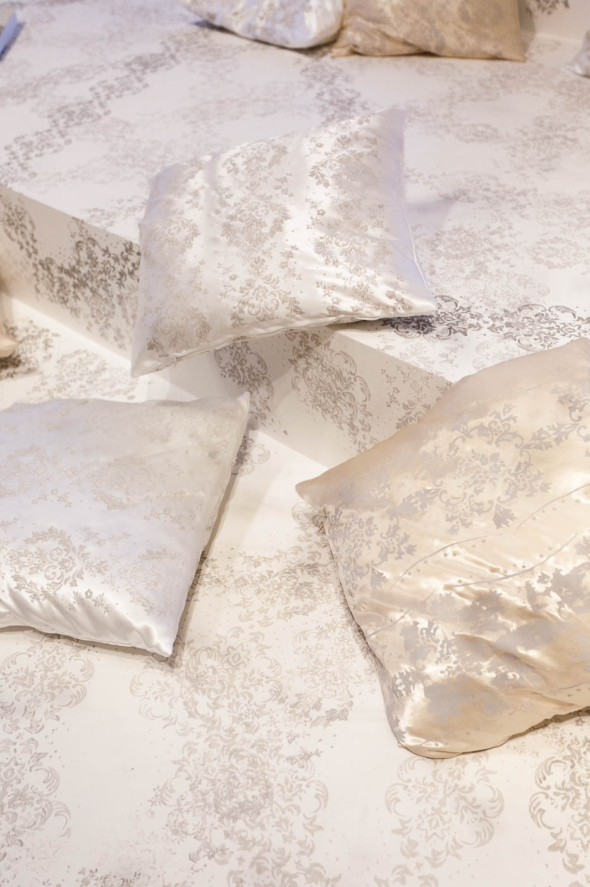
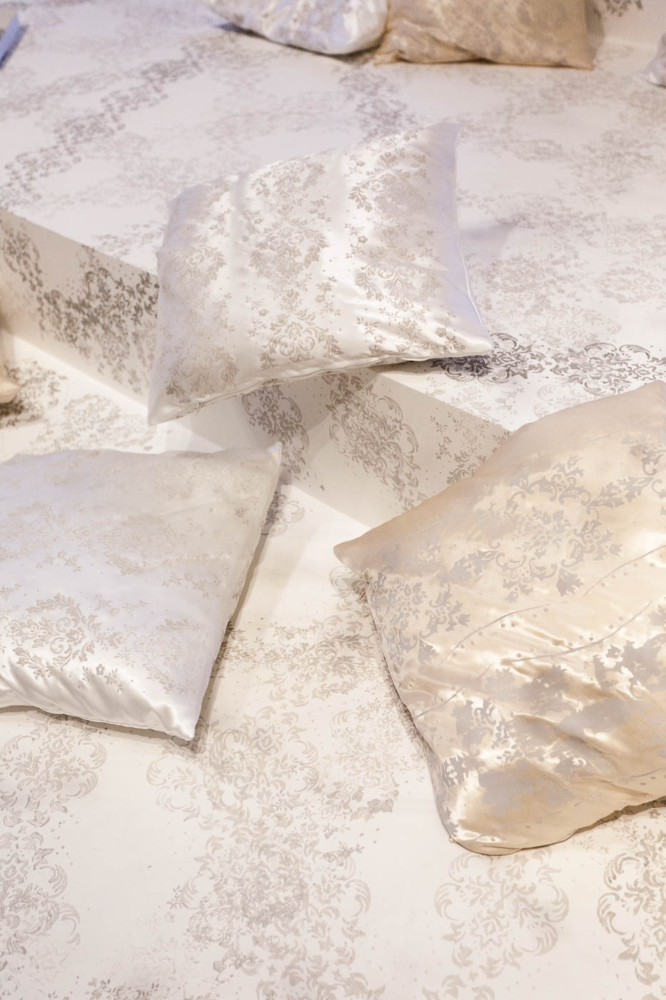